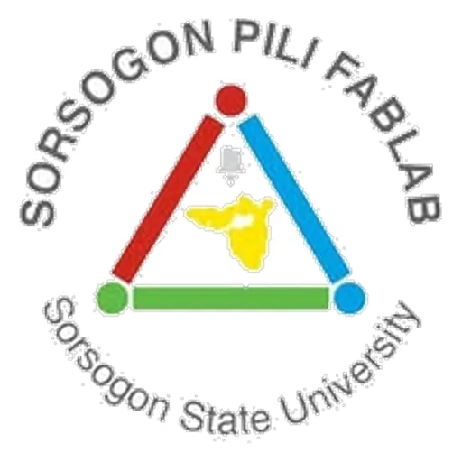

Sorsogon PILI FabLab (SorSU)
Sorsogon State University · Region V
Sorsogon PILI FabLab — named for the pili nut (Canarium ovatum), Sorsogon's flagship commodity — is the digital fabrication laboratory of Sorsogon State University (SorSU) in Sorsogon City, the capital of Sorsogon Province at the southernmost tip of the Bicol Peninsula. Operated through the university's Shared Service Center (SSC), the FabLab provides modern digital manufacturing tools and prototyping services to engineering students, faculty, and local entrepreneurs in Sorsogon and the Bicol region.
- Category
- Fabrication Laboratory (FabLab)
- Host institution
- Sorsogon State University
- City
- Sorsogon City
- Region
- Region V
- Operating status
- Operating
About the Center
Sorsogon PILI FabLab — PILI stands for the pili nut (Canarium ovatum), Sorsogon's flagship commodity in Fabrication Laboratory — is the digital fabrication laboratory of Sorsogon State University (SorSU) in Sorsogon City, the capital of Sorsogon Province at the southernmost tip of the Bicol Peninsula. Operated through the university's Shared Service Center (SSC), the FabLab provides modern digital manufacturing tools and prototyping services to engineering students, faculty, and local entrepreneurs in Sorsogon and the Bicol region.
As one of the southernmost FabLabs in the Luzon island group, SorSU's facility extends digital fabrication access to an area where such infrastructure has historically been limited — enabling local MSMEs, students, and creative entrepreneurs in Sorsogon Province to prototype and produce physical products without traveling to major urban centers. The lab supports Sorsogon's agriculture-based and tourism-oriented MSME ecosystem with modern product design and fabrication capabilities.
Sorsogon State University's mandate for regional development and innovation support — building on its history as Sorsogon State College — gives the FabLab an important role in advancing technopreneurship and maker culture across Sorsogon Province.
Programs & Services
- 3D Printing — Additive manufacturing for product prototypes, engineering models, and custom components
- Laser Cutting & Engraving — Precision material processing for wood, acrylic, and other materials for product design, signage, and creative applications
- CNC Milling/Routing — Computer-controlled machining for precision parts and custom component fabrication
- Vinyl Cutting — Digital cutting for graphic applications, signage, labels, and product branding
- 3D Scanning — Dimensional scanning for reverse engineering and digital capture of physical objects
- Large-Format/UV Printing — Wide-format printing for signage, graphics, and marketing materials
- CAD Workstations — Digital design facilities for technical drawing and product design
- Open-Access Fabrication — Services available to SorSU students, faculty, and MSMEs across Sorsogon Province
Contact
Sources & references
- sorsu.edu.ph/sorsu-and-the-sdg-2025
- sorsu.edu.ph/university-study-mission-to-fablab-exploring-innovation-and-co…
- dti.gov.ph/zero-to-hero/zth_luzon/zth_region-5/sorsogon-cracking-the-treasu…
Details are drawn from public records and the sources above, July 2026.
Startupreneur Innovation Hub · synced from the Notion catalog (July 2026) · status: published.